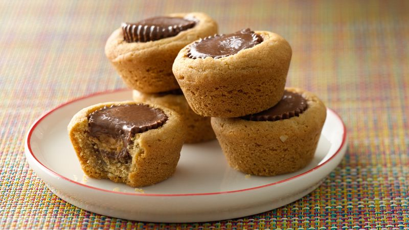

Peanut Butter Cup Cookies

Description
These peanut butter cookies are a delicious combination with peanut butter cup candies that are a personal
favorite.
Ingredients
- 1 3/4 cups flour
- 1/2 tsp salt
- 1 tsp baking soda
- 1/2 cup butter, softened
- 1/2 cup white sugar
- 1/2 cup peanut butter
- 1/2 cup packed brown sugar
- 1 egg, beaten
- 1 tsp vanilla extract
- 2 tbsp milk
- 40 miniature chocolate covered peanut butter cups, unwrapped
Steps
- Preheat oven to 375 degrees F (190 degrees C).
Sift together the flour, salt and baking soda; set aside.
-
Cream together the butter, sugar, peanut butter and brown sugar until fluffy.
Beat in the egg, vanilla and milk. Add the flour mixture; mix well.
Shape into 40 balls and place each into an ungreased mini muffin pan.
-
Bake at 375 degrees for about 8 minutes.
Remove from oven and immediately press a mini peanut butter cup into each ball.
Cool and carefully remove from pan.